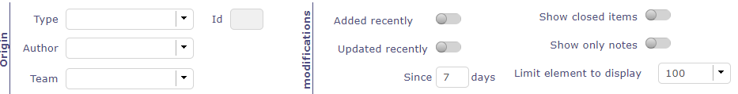
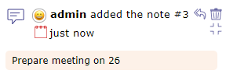
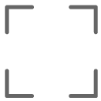

Activity Stream¶
The Activity stream allows you to display certain information about each of the elements of ProjeQtOr.
It is a kind of light history which allows you to quickly see the information of creation, deletion, changes of state of the element or the comments left by users according to their right of visibility.
Task list zone v9
The screen dedicated to the Activity Stream allows you to view all the feeds.
Filter system
Filter system
This filter allows you to restrict the display by …
- Type of element
- Its id
- Author
- Team
- Periods
- With or not option: closed item, only notes
You can also select the amount of information to display and restrict the list to the screen.
Elements displayed
We can see on this summary several elements:
- The element and its ID
- The name given to this element
- The creator of change
- The date and the hour of the change
- The name of the person responsible for the change
- The type of creation, change or deletion that was carried out
- The ID number into the history
Activity stream line
The impacted elements are all clickable. In the case of notes, the comment is displayeds.
Activity Stream on element screen
You can view the Activity Stream for each element on the screen of the latter.
Activity stream on the screen of a Project element
The items displayed depend on your visibility rights.
Activity stream zone
Activity stream information
Activity stream details
In the activity stream area you can view the same information as on the dedicated screen.
The author of the information relayed with his profile icon
The type of information displayed: creation, deletion, change of state or comments
The date and time of the modification
Add a note
You can add a note simply by clicking in the text box at the bottom of the activity stream area.
By default, your note is visible to all users assigned to the project linked to the item.
- Click on to make your note private
- Click on
to share it in public (project team: resources allocated to the project)
- Click on to share the note only with your team
Show/Hide notes
Likewise, it is possible to view the notes directly by using the following buttons
- Click on to hide note comment.
- Click on  to display note comment.
By default, you will see all visible notes for each item.
- Click on Show only notes on activity feed to display only notes type information.


{kind=link}
{kind=link}
{kind=link}
{kind=link}
{kind=link}
{kind=link}
{kind=link}
{kind=link}
{kind=link}
{kind=link}
Global view¶
Global view screen
The “Global view” screen lists all the main objects created during a project. This allows you to quickly search through all types of items available.
You can also choose to display only certain items through the list to display
Display one or more items